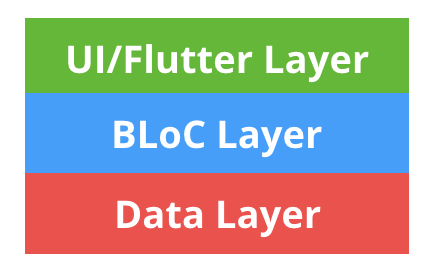
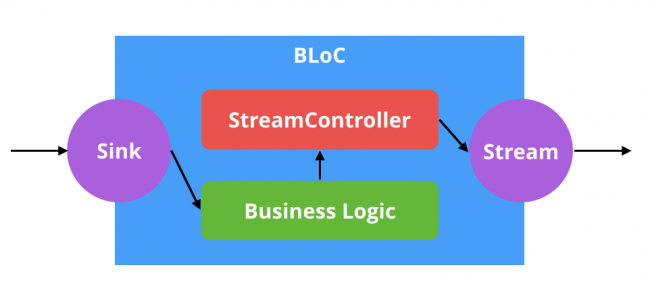

BLoC Pattern
- BLoC stands for Business Logic Components
Data Layer - The data layer is responsible for the app’s models and the connections to the back-end, it knows nothing about about the UI.

The BLoC Pattern is really just an interface around Dart streams: 
Streams, like Futures, are provided by the dart:async package
- A stream is like a Future, but instead of returning a single value asynchronously, streams can yield multiple values over time
First BLoC
Create a new directory in the lib folder named BLoC. This will be the home for all your BLoC classes.
- lib
- BLoC
Dispose Streams - One small caveat that needs to be kept in mind with streams is that they need to be closed when they are no longer needed, otherwise it can cause a memory leak.
final _locationController = StreamController<*Location*>();
- Here a private
StreamControlleris declared that will manage the stream and sink for this BLoC.StreamControllers use generics to tell the type system what kind of object will be emitted from the stream.
Future & Stream (Dart)
Future - A Future represents a computation that doesn’t complete immediately. Where a normal function returns the result, an asynchronous function returns a Future, which will eventually contain the result. The future will tell you when the result is ready.
Stream - A stream is a sequence of asynchronous events. It is like an asynchronous Iterable—where, instead of getting the next event when you ask for it, the stream tells you that there is an event when it is ready.
- Consuming a stream: Data is sent out of a stream to a StreamSubscriber (or possibly multiple subscribers).
- Populating a stream: Data gets into a stream from a StreamController.
How to create a Stream
StreamController<double> controller = StreamController<double>();
The next thing to do is to be able to get the values from a stream. This is commonly referred to as subscribing or listening to a stream.
stream.listen((value) {
print('Value from controller: $value');
});
The way you emit a value over a stream is by calling add on the streams controller.
- The listen call returns a StreamSubscription of the type of your stream. This can be used to manage the stream subscription.
controller.add(12);
Single-subscription Streams
This type of Stream only allows a single listener during the whole lifetime of that Stream.
It is not possible to listen twice on such Stream, even after the first subscription has been canceled.
Broadcast Streams
This second type of Stream allows any number of listeners.
It is possible to add a listener to a Broadcast Stream at any moment. The new listener will receive the events, as of the moment it starts listening to the Stream. import ‘dart:async’;
Business Logic Component
In short, the Business Logic needs to:
- be moved to one or several BLoC s
- be removed as much as possible from the Presentation Layer. In other words, UI components should only worry about the UI things and not about the business
- rely on exclusive use of Streams for both input (Sink) and output (stream)
- remain platform independent
- remain environment independent.
Helpful YouTube URL: https://www.youtube.com/watch?v=NCJZ_T8FiUo
import 'dart:async';
class JustDataBloc {
//This is the Stream that streams Just Data.
//Controller of this Stream.
var _justDataController = StreamController<String>.broadcast();
//Function to feed Data.
Function(String) get feedJustData => _justDataController.sink.add;
//Stream to output the Data
Stream<String> get streamJustData => _justDataController.stream;
dispose() {
//Dispose Stream to avoid memory leak.
_justDataController?.close();
}
}
//Global Variable for this Stream.
JustDataBloc justDataBloc = JustDataBloc();